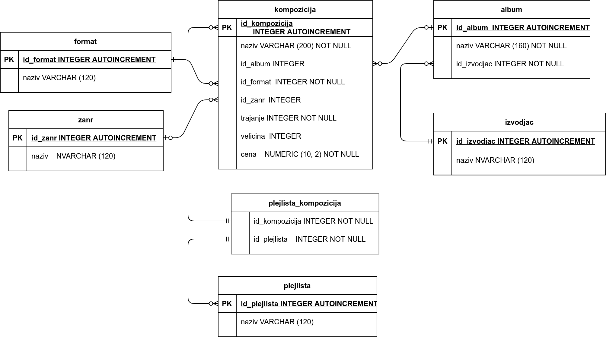
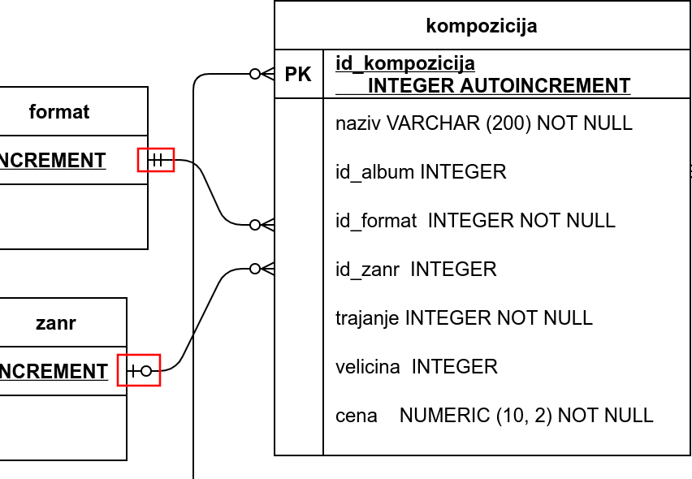
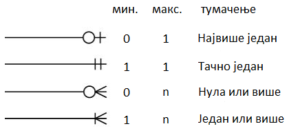
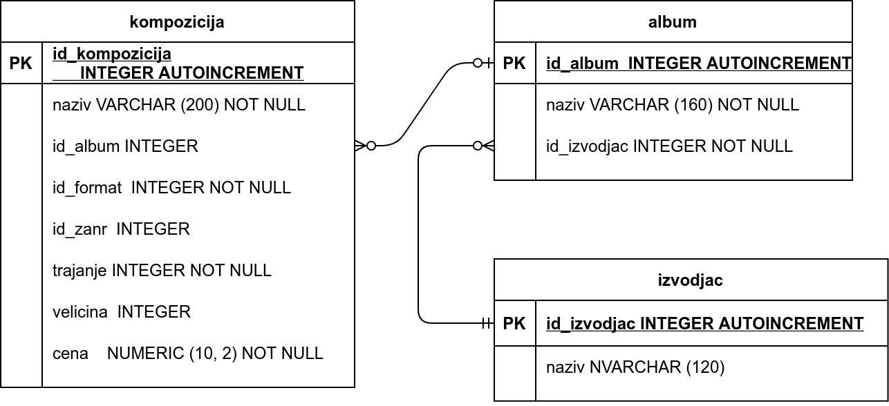

База компаније за продају дигиталних композиција – подаци о композицијама¶
Овде ћемо приказати како може да тече осмишљавање структуре садржаја једне базе података, што зовемо дизајнирање или пројектовање базе. Као пример смо искористили базу података фиктивне компаније за продају музичких композиција (углавном песама).
Сам процес дизајнирања је јако важан и претходи креирању сваке базе података. Након што се овај процес заврши, база података са свим табелама може да се креира у систему SQLite Studio као што смо видели на примеру креирања базе података за школски дневник. Ово је теоријска тема и током њене обраде нећемо практично радити у изабраном СУБП, али ћемо објаснити шта је све потребно да се припреми пре практичног креирања базе података фиктивне компаније за продају музичких композиција. На крају лекције ћете моћи да преузмете комплетну базу и учитате је у систем SQLite Studio да би кроз наредне лекције могли практично са њом да радите.
Спецификација¶
Пре свега, у бази треба да чувамо податке о композицијама. За сваку композицију чувамо неке основне податке:
назив
трајање (у милисекундама)
дигитални формат (MP3, AAC, …)
величина (у бајтовима)
жанр
цена
Подразумеваћемо да је број жанрова ограничен и да жанр може да буде само неки од унапред дефинисаних жанрова или да је композиција евентуално неког непознатог жанра. Слично, подразумеваћемо и да је дигитални формат неки са листе подржаних формата (на пример, mp3 или aac), при чему је формат сваке композиције обавезно неки са те листе (не може да буде непознат).
База треба да садржи и податке о албумима, који се, нормално, састоје од више композиција. Претпоставља се да није могуће да се иста композиција нађе на два различита албума, али је допуштено да неке композиције нису део ниједног албума (издате су као тзв. синглови). Даље, претпоставља се да се на сваком албуму налазе композиције само једног извођача и за сваки албум је познат назив албума и извођач. За сваког извођача je познато име.
У бази су дефинисане и листе композиција (тзв. плејлисте, енгл. playlist). Може постојати више различитих листа и свака листа може садржати произвољан број композиција.
Превођење спецификације у табеле¶
Покушајмо да на основу ове спецификације осмислимо табеле релационе базе података. Размотримо ентитете и њихове односе тј. везе.
Ентитети који се одмах јасно препознају су композиција,
албум, извођач и плејлиста. Све ове ентитете ћемо
представити табелама. Свакој од њих ћемо, поред атрибута који тај
ентитет природно описују, да придружимо по један вештачки целобројни
примарни кључ, односно id. Тиме добијамо почетну листу табела и
њихових колона (коју ћемо успут дорађивати):
- Табела
kompozicijaће да садржи следеће колоне: id_kompozicijaкао примарни кључnaziv, назив композицијеtrajanjeкао трајање композиције у милисекундамаvelicinaкао меморијска величина композиције у бајтовимаcenaкао цена једног примерка
- Табела
- Табела
albumће да садржи следеће колоне: id_albumкао примарни кључnaziv, назив албума
- Табела
- Табела
izvodjacће да садржи следеће колоне: id_izvodjacкао примарни кључnaziv, назив извођача
- Табела
- Табела
plejlistaће да садржи следеће колоне: id_plejlistaкао примарни кључnaziv, назив листе
- Табела
Овде још нисмо укључили у разматрање податке о жанровима композиција и дигиталном формату.
Код композиција истог жанра не желимо да понављамо податке о жанру,
чак ни када је једини податак о жанру његов назив. Један од разлога је
уштеда простора (идентификатор жанра заузима мање места него назив
жанра). Још важније, понављањем назива жанра ризикујемо словне грешке,
које нарушавају интегритет података и воде ка погрешним резултатима
претраге. Због свега тога, прогласићемо и жанр за посебну врсту
ентитета, којој ће да одговара табела zanr, са колоном id_zanr
као примарним кључем и колоном naziv, називом жанра. Да бисмо за
дату композицију имали информацију о њеном жанру, додаћемо и у табелу
kompozicija колону id_zanr као страни кључ, за који
дозвољавамо и вредност NULL.
Слична је ситуација са дигиталним форматом. Да бисмо избегли понављање
назива формата, дигитални формат ће бити још једна врста ентитета,
којој ће да одговара табела format са колонама id_format
(примарни кључ) и naziv (назив формата). Слично као код жанра, и
овај пут у табелу kompozicija додајемо нову колону као страни
кључ. Сада је то колона id_format, али овај пут не допуштамо
вредност NULL, јер по спецификацији за сваку композицију мора да
буде познат њен дигитални формат.
Веза између композиција и албума је један-према-више (свака
композиција припада највише једном албуму, сваки албум садржи нула или
више композиција). Везу остварујемо додавањем колоне id_album у
табели kompozicija. Пошто композиција може да не припада ни једном
албуму, дозволићемо да вредност колоне id_album у табели
kompozicija недостаје (тј. да буде NULL).
Веза између албума и извођача је такође један-према-више (према
спрецификацији, сваки албум има тачно једног извођача, а сваки извођач
може да има нула или више албума). Према томе, везу остварујемо
додавањем колоне id_izvodjac у табели album. Међутим, пошто
албум мора да има тачно једног извођача, овај пут нећемо дозволити да
вредност колоне id_izvodjac у табели album недостаје (да буде
NULL).
Остаје још да осмислимо како да чувамо податке о листама
композиција. Пошто свака листа може да садржи више композиција, а
свака композиција може да се нађе на више листи, реч је о вези
више-према-више. Као што је раније речено, такву везу обично
остварујемо помоћу нове табеле. У овом случају та нова табела ће се
звати plejlista_kompozicija и она треба да садржи идентификатор
листе id_plejlista и идентификатор композиције id_kompozicija
као стране кључеве. При томе ни један од ова два страна кључа не сме
да има вредност NULL.
Сада можемо да напишемо допуњену листу табела и њихових колона. За
сваку колону ћемо да наведемо назив и значење. Називе колона у којима је
вредност обавезна (тј. не сме да буде NULL) означићемо звездицом,
овако ’*’.
- Колоне табеле zanr:
id_zanr*, примарни кључ
naziv, назив жанра
- Колоне табеле format:
id_format*, примарни кључ
naziv*, назив формата
- Колоне табеле izvodjac:
id_izvodjac*, примарни кључ
naziv*, назив извођача
- Колоне табеле album:
id_album*, примарни кључ
naziv*, наслов албума
id_izvodjac*, идентификатор извођача (страни кључ)
- Колоне табеле kompozicija:
id_kompozicija*, примарни кључ
naziv*, наслов композиције
id_album, идентификатор албума (страни кључ)
id_format*, идентификатор формата (страни кључ)
id_zanr, идентификатор жанра (страни кључ)
trajanje*, трајање
velicina*, величина
cena*, цена
- Колоне табеле plejlista:
id_plejlista*, примарни кључ
naziv, назив листе
- Колоне табеле plejlista_kompozicija:
id_plejlista*, идентификатор листе (страни кључ)
id_kompozicija*, идентификатор композиције (страни кључ)
Дизајн базе до којег смо дошли може да се прикаже и следећим дијаграмом:
{kind=link}
На дијаграму су приказани ентитети са својим атрибутима (табеле са својим колонама) и везе које постоје између ентитета. Све приказане везе су типа један-према-више и остварене су помоћу страног кључа, као што је већ објашњено. Међутим, током анализе смо могли да уочимо да везе између ентитета ипак нису потпуно исте. На пример, композиција може, а не мора да има придружен жанр, али мора да има придружен дигитални формат. Овакви детаљи су такође приказани на дијаграму. Погледајмо пажљивије крајеве линија које представљају везе између поменутих ентитета (уоквирене црвено).
{kind=link}
Рекли смо да свакој композицији може да одговара нула или један
жанр. Управо то је симболички приказано на крају линије која повезује
ентитете kompozicija и zanr, на страни ентитета zanr (означено
доњим црвеним оквиром). За разлику од тога, горњи црвени оквир истиче
да у вези између ентитета kompozicija и format свакој
композицији одговара тачно један формат.
На крају сваке линије приказана су по два симбола. Симбол ближи средини линије означава најмањи могућ број повезаних елемената (доњу границу) и може да буде нула (опциона веза) или један (обавезна веза). Симбол ближи крају линије означава највећи могућ број повезаних елемената (горњу границу), а може да буде један или више.
Тако разликујемо наредне могућности за сваки крај везе:
{kind=link}
Увежбајмо читање ових ознака на још једном детаљу дијаграма.
{kind=link}
Приказану везу између композиција и албума читамо овако:
сваком албуму одговара нула или више композиција
свакој композицији одговара нула или један (највише један) албум
Слично томе, приказану везу између албума и извођача читамо овако:
сваком албуму одговара тачно један извођач
сваком извођачу одговара нула или више албума
Комбинација горњих граница на оба краја везе одређује општи тип везе: један-према-један, један-према-више, више-према-један, више-према-више. Ова комбинација је веома значајна, јер на основу ње одлучујемо да ли ће се у једној табели чувати примарни кључ друге (веза један-према-више) или ће бити потребно правити посебну додатну табелу (веза више-према-више).
Доње границе (нула или један) типично одређују да ли ће у некој колони
табеле бити допуштена вредност NULL.
Следе SQL дефиниције табела које треба да се креирају у СУБП, а које одговарају урађеном дизајну.
CREATE TABLE zanr (
id_zanr INTEGER PRIMARY KEY AUTOINCREMENT
NOT NULL,
naziv VARCHAR (120)
);
CREATE TABLE format (
id_format INTEGER PRIMARY KEY AUTOINCREMENT
NOT NULL,
naziv VARCHAR (120)
);
CREATE TABLE izvodjac (
id_izvodjac INTEGER PRIMARY KEY AUTOINCREMENT
NOT NULL,
naziv VARCHAR (120)
);
CREATE TABLE album (
id_album INTEGER PRIMARY KEY AUTOINCREMENT
NOT NULL,
naziv VARCHAR (160) NOT NULL,
id_izvodjac INTEGER NOT NULL,
FOREIGN KEY id_izvodjac
REFERENCES izvodjac (id_izvodjac) ON DELETE RESTRICT
ON UPDATE RESTRICT
);
CREATE TABLE kompozicija (
id_kompozicija INTEGER PRIMARY KEY AUTOINCREMENT
NOT NULL,
naziv VARCHAR (200) NOT NULL,
id_album INTEGER,
id_format INTEGER NOT NULL,
id_zanr INTEGER,
Composer VARCHAR (220),
trajanje INTEGER NOT NULL,
velicina INTEGER,
cena NUMERIC (10, 2) NOT NULL,
FOREIGN KEY id_album
REFERENCES album id_album ON DELETE RESTRICT
ON UPDATE RESTRICT,
FOREIGN KEY id_zanr
REFERENCES zanr id_zanr ON DELETE RESTRICT
ON UPDATE RESTRICT,
FOREIGN KEY id_format
REFERENCES format id_format ON DELETE RESTRICT
ON UPDATE RESTRICT
);
CREATE TABLE plejlista (
id_plejlista INTEGER PRIMARY KEY AUTOINCREMENT
NOT NULL,
naziv VARCHAR (120)
);
CREATE TABLE plejlista_kompozicija (
id_plejlista INTEGER NOT NULL,
id_kompozicija INTEGER NOT NULL,
CONSTRAINT PRIMARY KEY (
id_plejlista,
id_kompozicija
),
FOREIGN KEY id_plejlista
REFERENCES plejlista (id_plejlista) ON DELETE RESTRICT
ON UPDATE RESTRICT,
FOREIGN KEY id_kompozicija
REFERENCES kompozicija (id_kompozicija) ON DELETE RESTRICT
ON UPDATE RESTRICT
);